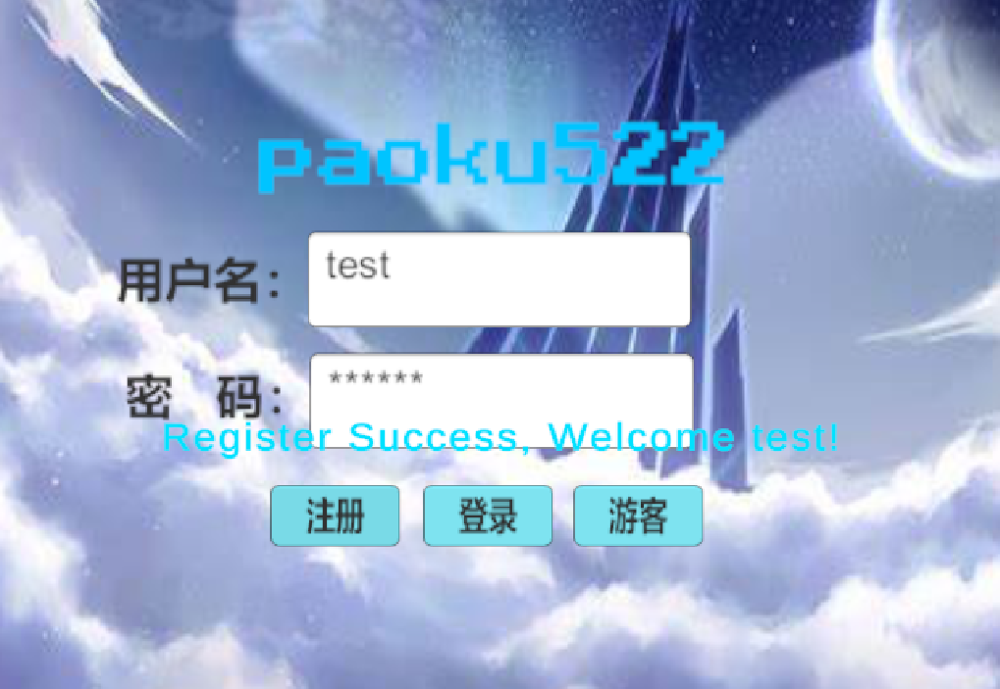
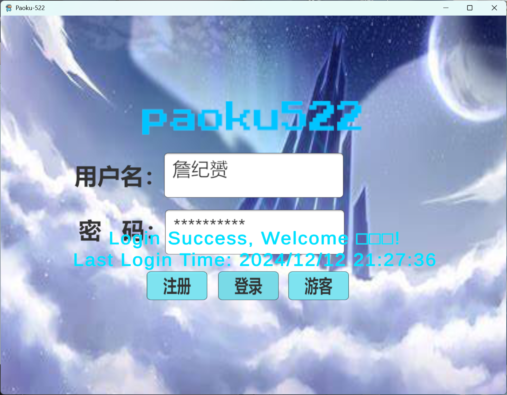
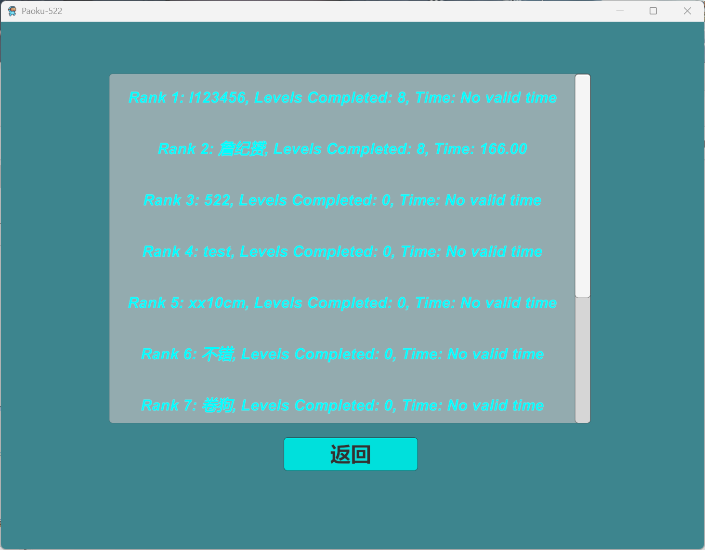
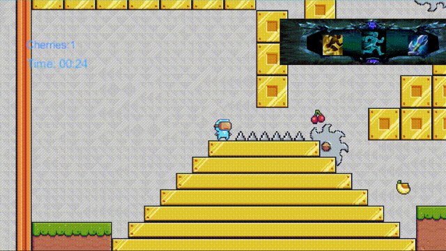

本游戏玩家可以进行注册登录，玩家数据会保存在云端数据库中，以便下次可以继续游戏。游戏中玩家数据由排行榜的形式呈现出来，同时也支持游客登录，游客登录数据会保存在本地，但玩家不能登上排行榜。
  登录成功后玩家可游玩本游戏。游戏中，玩家可以通过控制人物移动，最终到达终点，实现通关，在通关过程中，可以通过拾取cherries道具，在商店面板中购买相应的技能以供后续关卡的通关。
游戏中主要设计了八个关卡，其中关卡1为导引关卡，关卡2为基础关卡，关卡3-6为根据相应技能设计对应关卡，关卡7-8为综合关卡。以下为各个关卡的展示。
向玩家提示游戏的基本操作和死亡机制。
利用人物基础行为即可找到通关路线。
仅凭人物基础行为无法通关，使用二段跳技能才可通关。
难度高于第三关，需要使用闪现技能才可通关。
通关后解锁疾跑技能，才能避开陷阱并获取足够的 cherries。
人物在冰川场景移动会滑动，触碰陷阱时需使用名刀技能，实现死亡免疫，才可通关。
需要解锁所有技能，通过蜜蜂 Boss 的干扰：
玩家可利用 Boss 摧毁陷阱，寻找简便的通关路径。
场景逐渐变黑，需解锁护目镜技能恢复亮度：
游戏各关卡实现功能完整，场景设计与人物行为、技能设计联系紧密，满足正常需求。